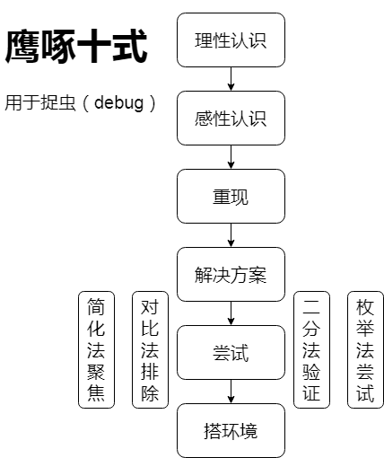

在绝望之谷攀爬有一段时间了，最近再次遇到一开始感觉一筹莫展的技术难题，想把这次的解题过程记下来，希望能形成套路，增强日后不断打怪的自信。
缘起
很多书和文章都提到成就别人等于成就自己，年过35，要再往上突破，不能再自己单打独斗了，毕竟即使仅仅考虑现实，现实就是身体和精力都支撑不了一直做单挑王。
很喜欢《输赢》，主人公周锐带给我一个很深刻的认识，就是，做一个培养大将的人比自己一直做一名大将更有成效，更有影响力，更有前景，也更适合不再年轻的自己。周锐创建了摧龙六式作为营销的套路，我也依葫芦画瓢，弄一个鹰啄十式，专门用于分析问题，特别是一些第一眼看上去一头雾水找不着北的问题，这类问题很容易令人（我自己）恐慌，因为不了解根本判断不出水的深浅，因为没有经验没有头绪也就没有底气不确定自己是否能解决，这时候就缺乏自信。但是每次用这十式解决问题后，我都会获得成就感，因此希望能通过总结套路，培养自信，勇敢的面对后续遇到的“未知”难题。
又是两年没写博客，两年发生了很多事，转型做区块链，还有小鱼儿，希望这次捡起来不要再丢了，很多文章都提到，写博客是一条路。
鹰啄十式

- 理性认识 了解问题的背景，相关概念
- 感性认识 接触出现问题的环境，进行尝试性操作
- 重现 掌握可以重现问题的操作步骤
- 解决方案 思考、搜索、研究可能的解决方案，有时候要停下来思考，尽量多列几个plan A、plan B
- 尝试 对于不熟悉的问题，除非看代码研究透了，否则就是各种试，通过重现验证以求试出答案
- 搭环境 在出问题的环境解决不了，就搭建一个私有环境，通过搭环境了解起源，从头到尾实现一次有助于掌握整个环境，同时熟悉并验证与问题相关的各个组件，做到对整体了然于心
- 二分法验证 逐个功能分解、验证，分而治之，逐步求精，缩小怀疑范围（也属于排除时的策略）
- 枚举法尝试 暴力尝试，逐个验证，特别适用于没有成功例子可以参考的情况下，碰运气（尝试就属于该技术）
- 对比法排除 有成功的例子可以参考对比，则对比差异，对差异逐个验证，暴力排除（也属于尝试时的依据）
- 简化法聚焦 精简验证的内容，排除复杂的干扰因素（搭环境就属于该技术，搭一个简化聚焦的环境）
补充
有时候，跟踪调试程序时，一步步跟踪深入可以了解执行的过程，但是对于比较隐蔽的问题，往往需要直接找到或猜测关键语句，直接在关键语句打断点通过堆栈发过来了解是怎么跑到该地方的。